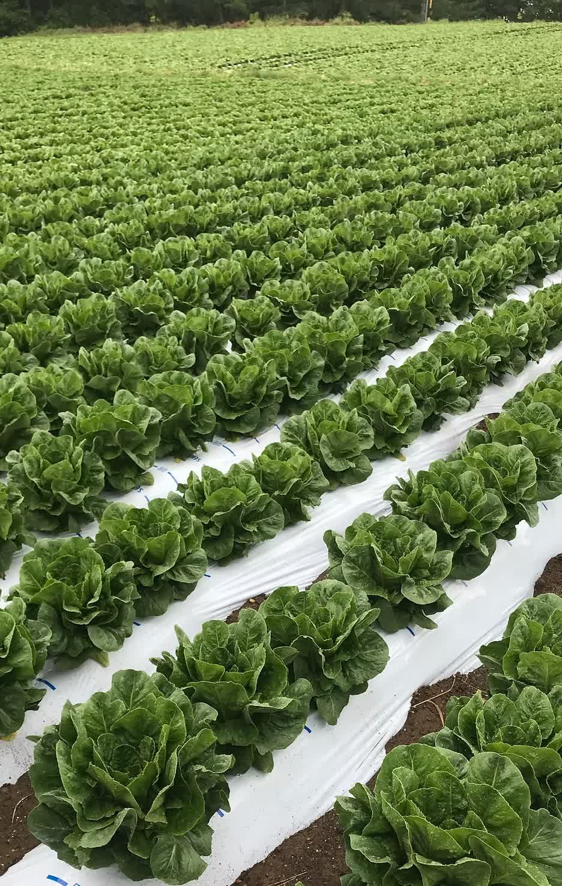
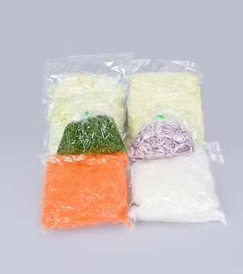

前の職場で「教えてもらえないまま辞めた」経験がある方へ。うちは数ヶ月の実習で全工程を体験してから配属を決めます。持ち場ごとに責任者がいるので、困ったときは隣に聞ける人がいます。



「配属されてから放置」がないように、段階を分けて育てます
荷受け・カット・パック詰め・ピッキング。数ヶ月かけて全工程を体験し、現場の雰囲気に慣れます。
実習を見た責任者と本人の希望をすり合わせて、最初の持ち場を決定。合わない工程に無理に置きません。
持ち場ごとに責任者を配置。分からないことは隣で聞けます。ローテーションが少ないので1工程をじっくり習得。
「こっちも経験してみようか？」と幅を広げる段階。品質管理は資格取得支援制度も使えます。
前職の経験は問いません。パートから正社員になった社員も、新卒入社の社員も、同じ流れで育ってきました。
ここまで読んで「話を聞いてみたい」と思ったら
エントリーする（応募前の質問だけでもOK）9:00〜18:00（昼休憩1時間＋午後休憩30分）
※ここはサンプルです。実際には御社スタッフの1日の流れに差し替えます制服に着替えて衛生チェック。エアシャワーを通って工場へ。
今日の生産スケジュールと人員配置を確認。責任者から一言。
荷受けの下処理、またはカット工程へ。先輩が隣にいます。
休憩室でお昼。パートさんと社員が普通に雑談している時間。
パック詰めやピッキング。午後は出荷に向けて少し速度が上がります。
一息ついてラストスパートへ。
ラインを洗浄し、明日の段取りを確認して18:00退勤。
インタビューとは別に、いろいろな年代・部署の声を並べています
※ここはサンプルです。実際に働く先輩からのメッセージ・写真に差し替えます飲食から転職。日勤のみで生活が安定しました。決まった手順を正確にこなすのが好きな人には合うと思います。
40代でパートから始めました。社員の若い子とも普通に話せる雰囲気です。時短も相談できます。
持ち場ごとに責任者がいるので、新人を放っておくことはありません。分からないことは何度でも聞いてください。
グループ企業の安心感があります。事務は少人数ですが、工場のみんなと距離が近いのが良いところです。
同期がいるので心強かったです。最初の実習で全工程を見られたので、配属後のギャップがありませんでした。
体を動かすのが好きなので合っています。注文書どおりに仕分ける仕事で、慣れると気持ちいいです。
9:00〜18:00。生活リズムを崩しません。
部署で調整し、土日祝休みも相談OK。有給あり。
健康保険・厚生年金・雇用保険・労災保険。
いずれも業績による。
品質管理系の各種技能試験を会社がサポート。
駐車場完備。交通費規定内支給（上限月2万円）。
更衣室・休憩室完備（自販機あり）。
子育て・介護による時短の相談も可能。
インフルエンザ予防接種あり。
「まだ応募するか決めていないけど質問したい」でも構いません。工場見学も調整しますので、気軽にご連絡ください。
※ここはサンプルです。実際の採用担当者の写真・氏名に差し替えます（不要なら削除できます）| 仕事内容 | 荷受け・下処理／カット（機械加工）／パック詰め／ピッキング／品質管理（衛生管理・細菌検査・帳票管理・監査対応）※品質管理は資格取得支援あり |
|---|---|
| 給与 | 月給240,000円〜260,000円（経験により優遇）※固定残業代25時間分37,000円〜40,000円を含む／超過分は別途支給 ※試用期間3か月は時給1,300円（固定残業代なし） |
| 勤務地 | 千葉県山武郡芝山町岩山350転勤なし／芝山鉄道「芝山千代田駅」より車10分・公共バス利用可 |
| 勤務時間 | 9:00〜18:00（昼休憩1時間＋午後休憩30分） |
| 休日・休暇 | シフト制（月7〜8日）※希望考慮、土日祝休みも相談OK／有給休暇 |
| 資格・経験 | 未経験歓迎。通勤手段を確保できる方（車・バイク・自転車・徒歩） |
| 待遇 | 社会保険完備／昇給年1回・賞与年2回（業績による）／交通費規定内支給（上限月2万円）／資格取得支援／制服貸与（更衣手当）／更衣室・休憩室完備／車・バイク・自転車通勤可／育児休業・介護支援／健康診断／インフルエンザ予防接種 |
| パート・アルバイト | 同時募集・年齢不問。時給1,300円〜／9:00〜17:00（時短相談OK）／週3日〜 |
| 仕事内容 | 受発注データ入力・伝票処理／請求・入金・支払業務／電話・来客対応／勤怠集計の補助※サンプル。実際の業務内容に差し替えます |
|---|---|
| 給与 | 御社確認後に反映 |
| 勤務地 | 千葉県山武郡芝山町岩山350（転勤なし） |
| 勤務時間・休日 | 御社確認後に反映 |
| 資格・経験 | 御社確認後に反映※例：PC基本操作、経理・事務経験があれば優遇 など |
| 待遇 | 製造スタッフに準ずる（要確認） |
WEB応募は24時間受付。折り返しご連絡します。面接時は履歴書（写真貼付）をご持参ください。
0479-85-7750電話でも受付（採用係／9:00〜18:00）